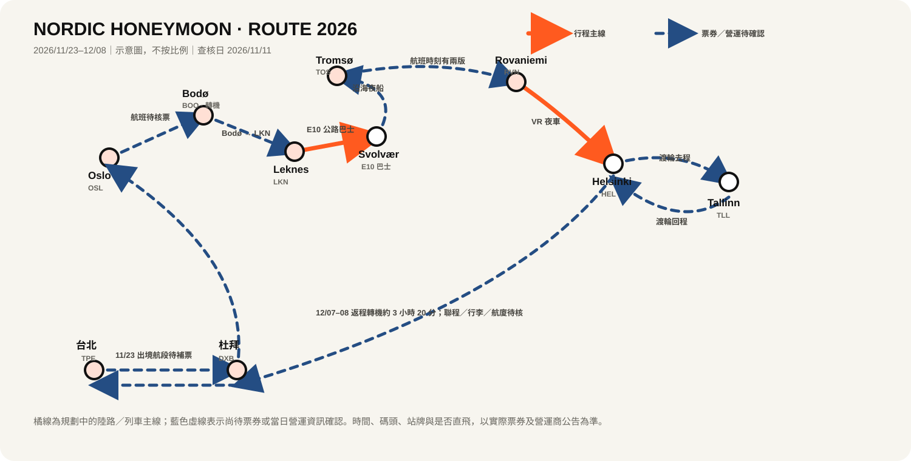

11/23–11/25｜台北 → 杜拜 → 奧斯陸 → Bodø → Leknes
每日行程缺少 11/23 出境航段。11/25 只列 Oslo–Bodø–Leknes 的候選時間；以電子機票確認日期、航班號、轉機、行李直掛和 Leknes 抵達後接送。
逐日行程・車站指引・票券・費用
依城市整理，僅列出行程中需要使用的 APP。
金額照原始行程保留；未填項目不自行估價。
把尚未定案、需要天氣／營業時間／交通確認的內容集中記錄。
以城市與交通節點畫出順序；路線圖不是導航，也不代表票券已確認。

每日行程缺少 11/23 出境航段。11/25 只列 Oslo–Bodø–Leknes 的候選時間；以電子機票確認日期、航班號、轉機、行李直掛和 Leknes 抵達後接送。
按 E10 公路走廊規劃巴士移動。用 Reis 按 11/27 實際日期查上下車站、班次和回程；出發當天看 Statens vegvesen 路況。沒有可靠回程或遇風雪結冰，就取消 Skårungen 桑拿。
計畫搭夜船。Hurtigruten 季節表上的港口時間不能代替個人船票；另有 MS Richard With 於 11/18–29 維修公告，請核對票面船名、當日航次、登船截止和行李安排。
專案記有 10:25–12:35 和 10:30–12:30 兩組時間，尚無可核對的航班號／票券。確認實際航線、轉機與兩地當地時間；住宿到機場交通也要以首班車核實。
計畫搭 VR 夜車；出發與抵達時間、座位／臥舖以 12/04 車票為準。Rovaniemi 車站行李櫃可作主要寄物方案，需先確認尺寸、時長和開櫃時間。
去、回程分成兩段渡輪。先選船公司，再按各自票券核對赫爾辛基與塔林碼頭、登船截止及返程時間；塔林景點留足回港時間。
計畫轉機 3 小時 20 分。核對是否同一張票、行李是否直掛、航廈與下一段報到／登機截止；若要入境杜拜，另查台灣護照規定。
先保住已核實的長途交通與住宿銜接。Lofoten 桑拿、Tromsø 遠郊步道、塔林 Toompea 上坡和戶外散步都可取消；不要為了趕景點追不確定的末班車。
預報只使用氣象機構近期資料；本頁不把季節常態當成逐日預報。
穿防水外層和止滑鞋；MUNCH、市集都當可取消項目。11/25 先確保回住宿取行李、搭上已核實的 Vy 班次。
Yr：查 Oslo 預報 ↗羅弗敦白天短、路面變化快。11/27 不把候選巴士時間當保證；若路況、班次或回程不可靠，取消桑拿，優先確保住宿和 11/28 登船。
Yr：查 Leknes ↗ Yr：查 Svolvær ↗ 挪威道路路況 ↗遠郊步行、橋上散步和觀景點都先看當日天氣與回程班次。結冰或風勢不適合時改市區室內行程；戶外行程須預留提早折返時間。
Yr：查 Tromsø ↗分層穿衣、保暖手套和帽子；哈士奇團與等車時避免長時間露膚。戶外活動只按團方當日通知進行，回住宿交通要先確認。
Yr：查 Rovaniemi ↗ 芬蘭氣象局 ↗12/06 往返船班、碼頭及芬蘭獨立日的交通／營業時間都按票券和官方公告確認。舊城石板路或 Toompea 上坡遇冰雪就縮短路線。
Yr：查 Helsinki ↗ Yr：查 Tallinn ↗杜拜天氣不影響空側轉機的航廈／行李銜接；若要出管制區，先核對入境資格、航廈交通和下一段報到時間。
Yr：查 Dubai ↗ 阿聯酋國家氣象中心 ↗挪威／申根免簽須符合護照條件。預計 2026/12/07 離開申根，護照至少有效至 2027/03/07，且簽發未滿 10 年；台灣護照需含國民身分證字號。另核對近 180 天申根停留日數。若護照類型不同，重新查適用規定。
截至 2026/11/11，ETIAS 官方頁顯示尚未開始收件；旅行日期接近政策變動期，登機前再核對。EES 已全面運作，首次入境可能需要拍照及採集指紋；預留奧斯陸入境時間。
確認兩人保單涵蓋 11/23–12/08、醫療與緊急運送、延誤／取消，以及雪地步行和哈士奇團；把保單、24 小時援助電話、回程機票、住宿和活動訂單存進手機離線檔。
歐盟地區緊急電話 112；挪威警方緊急 112、救護車 113、非生命危急的醫療值班 116 117。另存住宿、活動營運商和保險援助電話。
查電子機票上的票號／聯程、行李直掛、航廈、入境需求和登機截止時間。若要入境杜拜，先在官方頁確認台灣護照當時的入境規定。